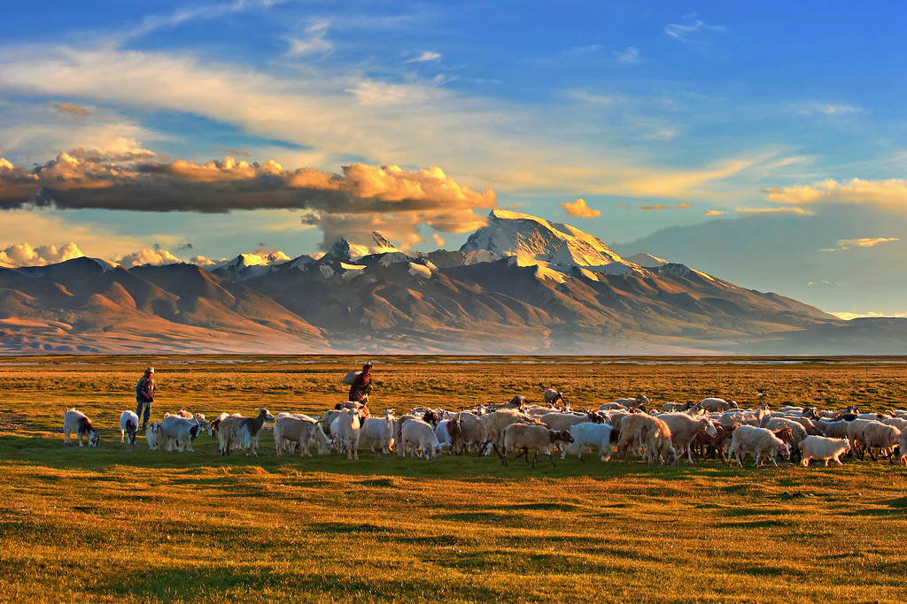

汉语中的“西藏”（藏文为bodljong）一词是指中华人民共和国的西藏自治区（藏文为bodrangskyongljong），简称为西藏。西藏，以清朝中央正式定名得名。唐宋为吐蕃；元朝属宣政院；明朝称乌思藏，设都司等；清初称卫藏，卫即前藏，藏即后藏；后正式定名为西藏，为西藏得名的开始；清朝设西藏办事大臣；民国初西藏地方；中华人民共和国成立以后，1965年西藏自治区正式建立，西藏一词即成为西藏自治区的简称，单字简称为“藏”。
英文“Tibet”一词，可能源于突厥人和蒙古人称藏族为“土伯特”，在元代经阿拉伯人介绍到西方，也即是源于藏族的自称bod。在民族称谓上，Tibet对应于“藏族”；但是在地域称谓上，Tibet有时对应于“西藏”，有时又泛指整个藏族地区，与“西藏”的含义有重大差异。
